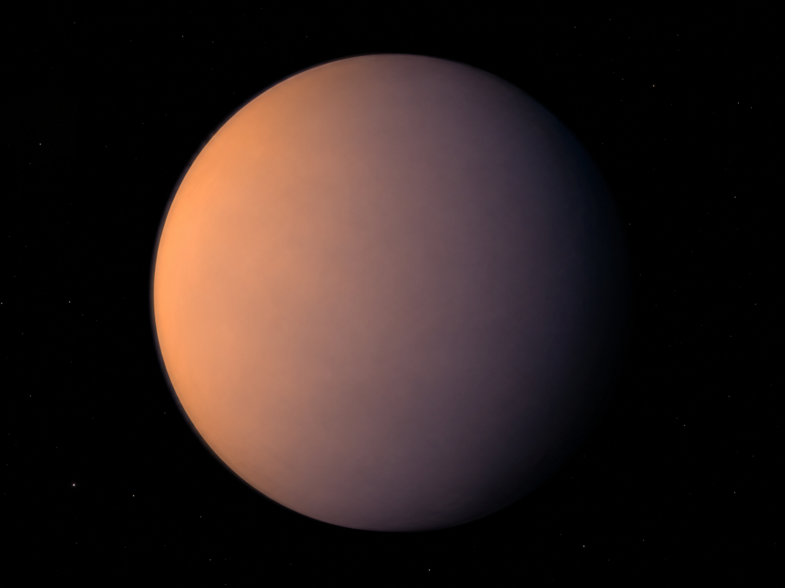
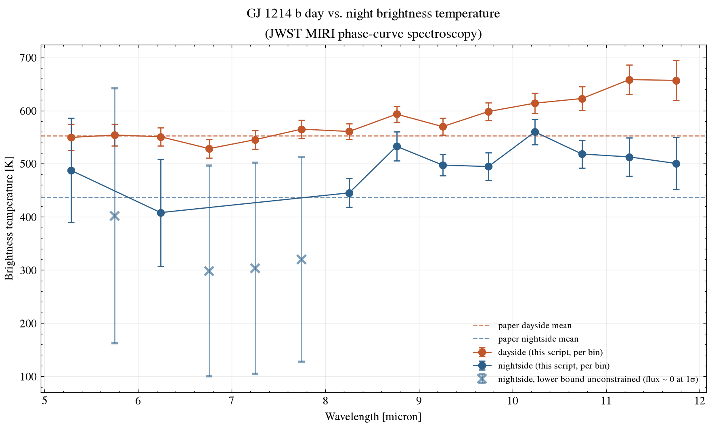
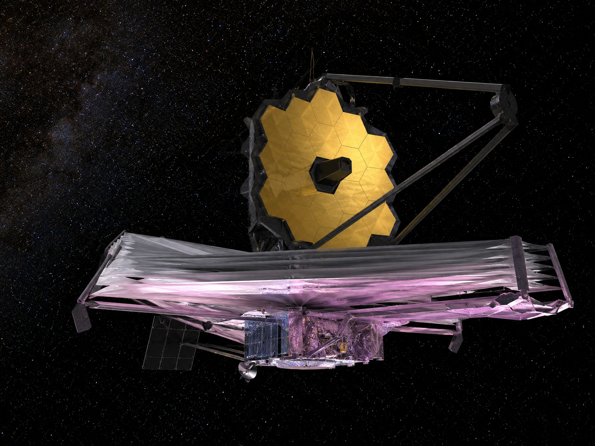

Exoplanet Atmosphere Report · JWST MIRI Phase Curve
The archetypal "flat spectrum" mini-Neptune — its transmission spectrum has stayed stubbornly featureless through more than a decade of HST and Spitzer observations, hidden behind thick clouds or haze. A full-orbit JWST MIRI phase curve took a different approach: measuring its thermal emission, day and night, instead of trying to see through the haze in transit.
AI-generated artist's concept of GJ 1214 b — not a real photograph. All data and figures in this report come from actual JWST MIRI observations (see below).
Queried live from the NASA Exoplanet Archive TAP service (pscomppars).
| Radius | 2.73 Earth radii |
|---|---|
| Mass | 8.41 Earth masses |
| Orbital period | 1.58 days |
| Semi-major axis | 0.0151 AU |
| Equilibrium temperature | 567 K |
| Host star | GJ 1214, M-dwarf, Teff = 3101 K, 0.216 Rsun, 0.182 Msun |
| Distance | 14.6 parsecs (~47.8 light-years) |
| Discovery | 2009, transit photometry (MEarth survey) |
GJ 1214 b's mass and radius place it squarely in the "mini-Neptune" or "sub-Neptune" regime, with no solar-system analog. Every transmission spectrum obtained for it since its 2009 discovery — HST, Spitzer, and more — has come back essentially featureless: a strong sign of high-altitude clouds or photochemical haze blocking the molecular absorption features a transmission spectrum would otherwise reveal, rather than evidence the planet lacks an atmosphere at all.
Kempton et al. (2023) took a different observational approach with JWST: a full-orbit MIRI photometric phase curve, tracking the planet's own thermal glow continuously as it orbits, rather than only during transit. This measures the planet's actual temperature structure directly, sidestepping the cloud/haze opacity problem that has defeated transmission spectroscopy.

AI-generated 3D-render-style concept of the planet's haze/cloud layer implied by its featureless spectrum — not an actual image of the planet.
The figure inverts the per-wavelength dayside and nightside flux ratios from the published phase-curve fit into brightness temperatures, using the Planck function and each bin's own fitted Rp/Rs, with each point's own asymmetric uncertainty propagated through the inversion rather than treated as an exact value.

scripts/analyze_spectrum.py.This page's own inverse-variance-weighted combination of the 14 per-bin Planck inversions gives 575 ± 5 K dayside and 506 ± 9 K nightside — in the same range as, but not identical to, Kempton et al.'s own 553 ± 9 K and 437 ± 19 K, which come from fitting the full spectrum jointly rather than combining independent per-bin inversions. Four of the fourteen nightside bins have a fitted flux that is consistent with zero at one sigma; for those, the lower temperature bound is reported as unconstrained (down to 0 K) rather than computed from an arbitrarily small positive flux, which is why their error bars in the figure extend so far down and why they carry little weight in the combined mean. Both estimates point to a day-night contrast well below an ultra-hot Jupiter like WASP-121 b's ~1560 K (see that report in this series) and are broadly consistent with a real atmosphere redistributing heat, however imperfectly, rather than a bare rock. Kempton et al. also derive a Bond albedo of 0.51 ± 0.06 from the full fit, something this page's simpler per-bin approach doesn't attempt to reproduce.
System parameters come from the NASA Exoplanet Archive TAP service. The phase-curve results are published best-fit values from Kempton et al. (2023), released publicly on Zenodo (record 10.5281/zenodo.7703086). See data/ for the exact file as downloaded and scripts/analyze_spectrum.py for the brightness-temperature inversion (python scripts/analyze_spectrum.py to rerun it). Every fitted central flux value in this dataset is positive, so no bin is excluded outright — but four nightside bins have a lower flux bound that crosses zero, and their lower temperature bound is reported as unconstrained (0 K) rather than clipped to a small positive flux to manufacture a finite number, since a flux consistent with zero is a genuine non-detection at that confidence level, not a precise small measurement.

AI-generated illustration of the James Webb Space Telescope, whose MIRI instrument took the real phase-curve data used in this report. Not an official mission photograph — see NASA/JWST for real imagery.